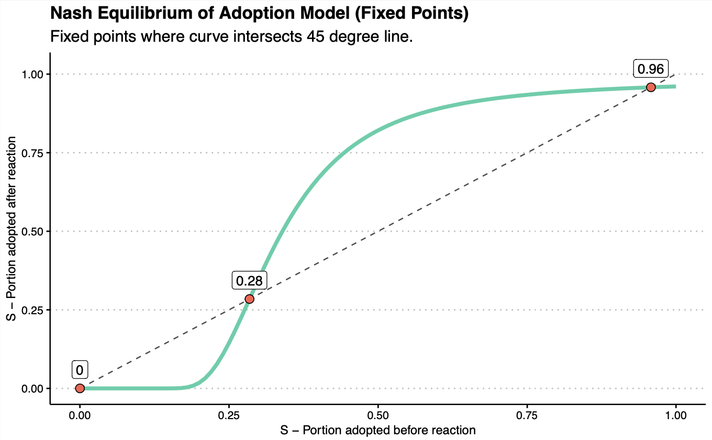
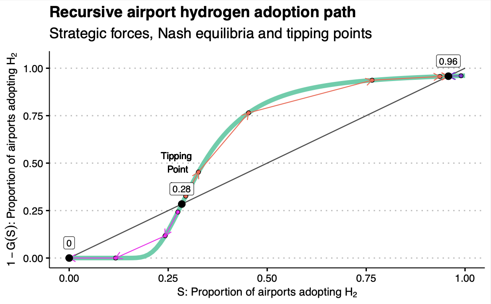
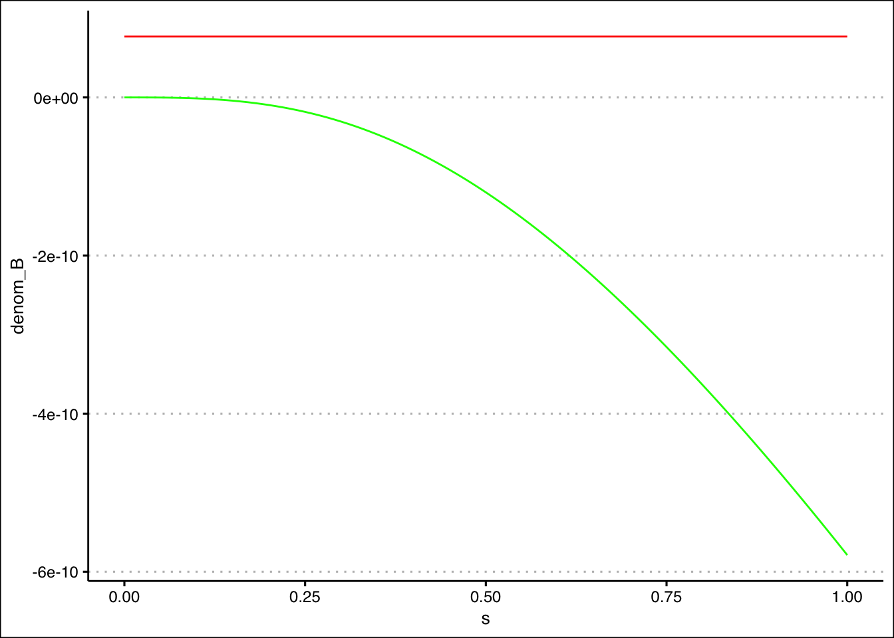
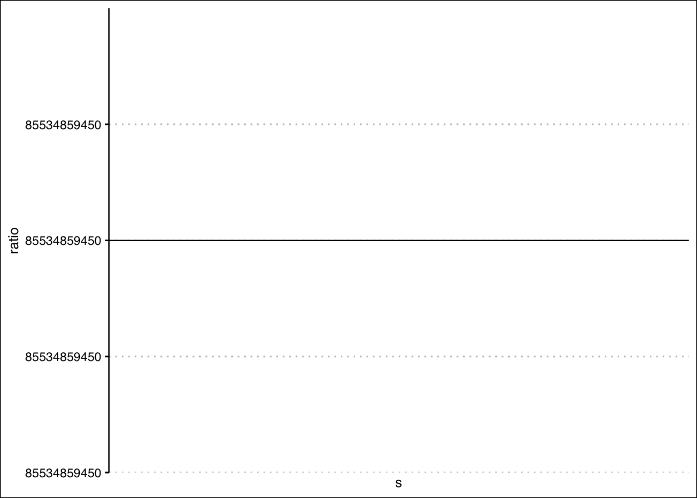
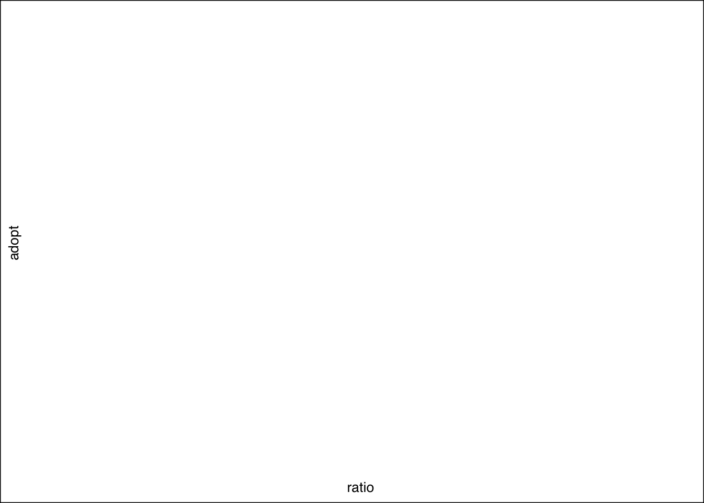

# Remove all items from memory
rm(list = ls())
# Temporarily set the working directory
# to load source code files.
setwd("../src/")
source("h2_adopt_model.R")
source("h2_adopt_model_plots.R")
# Load the necessary libraries
library(tidyverse)
library(ggthemes)Network Effects Fixed Point Analysis
Network Effects Equilibrium
This notebook creates a calibrated model and computes the associated Nash equilibria (if any) and generates plots showing the equilibria and the path dynamics. For example, if no positive equilibrium exist, it will show the theoretical adoption curve and the single equilibrium at zero adoption. If there are positive equilibria, then the graph will show the three Nash equilibria of the model: low, tipping, and high. The graph will then show the recursive dynamics of the adoption curve. For any initial point below the tipping point equilibrium, recursive application of the adoption decision of airports will drive the system to the zero adoption equilibrium.
Below we have two example plots when there are positive adoption equilibrium. The first is the result of the function ne_simple_plot() and the second shows the recursive dynamics of the system detailing how it moves from one equilibrium to another along the adoption curve and is generated by a function called ne_plot_recursive() .


Following the plots, there is some additional code setup to analyze the properties of the chosen model calibration to debug issues.
Define Calibrated Distribution of Airport Sizes
The first step is to calibrate the function that will be used as the CDF for the distribution of airport sizes in the model. Carrying over estimates from the calibration_airport_size.qmd notebook we specify the function.
# Define distribution of airport sizes
# Focusing on origin passenger miles and removing
# outliers (1.5 x interquartile range) we have
# the following, where Q_min is set artificially low
# since its close Q_min = 11.
Q_min <- 0.5
Q_max <- 85534859450 #1917009.00
Q_mean <- 999469355 # 197069.96
Q_mode <- 8683.595
# Gamma Distribution Parameters
# Current parameters from mode-mean calibration
theta = 1727595.34 #188386.36
k = 1.032609 #1.046095
pareto_cdf <- function(x, x_m = 2, a = 6){
return(1 - (x_m/x)^a)
}
calibrated_pareto_cdf <- function(x) {
return(pareto_cdf(x, Q_min, Q_mean/(Q_mean-Q_min)))
}
calibrated_gamma_pdf <- function(x) {
dgamma(x, shape = k, scale = theta)
}
calibrated_gamma_cdf <- function(x) {
pgamma(x, shape = k, scale = theta)
}Define the Model
In the code below we will define a model. A model has two general components.
- A dataframe object with a column for each of the parameters. The dataframe must have at least one row, but there exist functions in the source code which will allow the dataframe to have many rows to simulate different models, or models over time. The names of the parameters must be specified exactly as shown.
- A function representing the CDF of the airport size distribution.
These two components will be combined in a named list with the following required names:
The dataframe of parameters must be named “model_params”.
The function for the airport size CDF must be named “cdf”.
The model below shows one particular calibration. It does not currently result in any positive adoption equilibrium. Several factors must be adjusted significantly to get adoption to occur.
We will create a set of model parameters that are calibrated to reflect the current reality as much as possible.
For clarity, the key model parameters aside from the CDF are:
"p_h": Relative price of LH2 to kerosene-based jet fuel faced by airlines"f_k_rev": Millions USD operating revenue per passenger-mile for jet fuel"f_k_exp": Millions USD operating expenses per passenger-mile for jet fuel"f_h_rev“: Operating revenue per passenger-mile for hydrogen relative to jet fuel. Value of 1 implies the same revenue per passenger-mile as jet fuel, 1.2 is 1.2 times that of jet fuel, i.e., 20% higher. While 0.85 would imply hydrogen operating revenues per passenger-mile are 85% (15% lower) of that for jet fuel."f_h_exp": Operating expense per passenger-mile for hydrogen relative to jet fuel. Same logic as relative operating revenue."delta": Discount rate in \((0,1)\) to applied to benefits and costs occurring in the future. Typically the weighted average cost of capital to the airport is used as a measure here. But higher values can imply greater “impatience”, while lower values imply greater “patience”."gamma": Growth rate in \([0, \delta)\) is the rate at which operating revenues and expenses are expected to grow as a whole going into the future. This may be set to zero if we have growth in the individual parameters for revenue and expenses. Or it may be positive and reflect the inflation rate if \(\delta\) is the nominal interest rate faced by the airport. This would yield an overall effective discount rate close to the real interest rate."x": The fixed cost portion in Million USD (y-intercept) of the adoption cost function. It is the minimal capital expenditure required for an airport with very small capacity to even get started."c_x": The marginal capital expenditure (cost) in Million USD per kiloton of LH2. \(Million\;USD/kt\;LH2\)"eta": The conversion rate between kilotons of LH2 and passenger-miles. The capital expenditure function derived from the research paper examples takes annual kilotons of LH2 as an input and returns cost in millions. Using annual passenger-miles as our measure of airport size we need to convert this function to annual passenger-miles. \(c_x \times \eta = \frac{Million\; USD}{kt\; LH2} \times \frac{kt\; LH2}{pm} = \frac{Million\; USD}{pm}\)."nu": The percent or proportion of an airport’s annual capacity they desire to reflect the capacity of LH2 services they will provide in the future. For example, an airport adopting LH2 may anticipate that demand for LH2 aeronautical services will not reach 100% of their airport’s capacity. So they would have no need to invest in enough infrastructure to meet that demand. Instead, they may anticipate that at most 50% of their annual flight capacity will be demanded in the form of LH2. In such a case we would set \(\nu = 0.5\) to reflect that reality in the capital expenditure function when calculating the cost of adoption."rho": A substitution parameter in \((0, 1)\) belonging to the airport industry’s production function. As the parameter approaches 1, the inputs of Kerosene/Jetfuel and LH2 become perfect substitutes for one another. This would imply that airlines will simply choose all kerosene or all LH2, whichever is cheapest. As \(\rho\) approaches 0, the ability to substitute one input for the other decreases in the production function and at least some positive demand for each should exist. This latter scenario is difficult to imagine as jet fuel is already incorporated into all airports and aircraft. But perhaps in the future other scenarios may arise where some existing airports become hydrogen only, or perhaps new hydrogen-only airports are created and airlines have to demand at least some hydrogen aeronautical services if they want to include that airport in their network. Currently the value has been set to \(\rho = 0.5\).
# Set the model parameters using a dataframe.
calibrated_model_params <- data.frame(
"p_h" = 1.2
, "f_k_rev" = 0.00000002118861
, "f_k_exp" = 0.00000001871368
, "f_h_rev" = 1
, "f_h_exp" = 1.2
, "delta" = 0.04
, "gamma" = 0.02
, "x" = 173.75
, "c_x" = 2.7031
, "eta" = 0.00000001425
, "nu" = 0.1
, "rho" = 0.5
, "q_min" = Q_min
, "q_max" = Q_max
, "q_mean" = Q_mean
)
# Create Model List
model <- list(calibrated_model_params,
calibrated_gamma_cdf)
names(model) <- c("model_params", "cdf")After the model list object is created, we can generate some plots as follows:
- Supply the entire model as an argument to the
ne_plot_simple_data()function. - Use the returned data objects from that function and input them as arguments, along with an plot file name, to the
ne_plot_simple()function and the graph will be generated and saved in the image directory.
# Here we input the model into a helper
# function which returns the data necessary
# for plotting the figure.
plot_df <- ne_plot_simple_data(model)
# Pass the two components 1 and 2 of the returned
# plot data into the simple plot function and specify
# a name for the
ne_plot_simple(plot_df[[1]], plot_df[[2]], "simple_ne_plot.pdf")We do a similar process to obtain the recursive Nash equilibrium plot
plot_df2 <- ne_plot_recursive_data(model)
ne_plot_recursive(plot_df2, model$model_params, "ne-plot-recursive.pdf")Warning: Removed 1 row containing missing values or values outside the scale range
(`geom_segment()`).Trouble Shooting Model Calibration
The process of calibrating the model is difficult, as a delicate balance must be struck to
f_k_rev <- calibrated_model_params$f_k_rev
f_h_rev <- calibrated_model_params$f_h_rev
f_k_exp <- calibrated_model_params$f_k_exp
f_h_exp <- calibrated_model_params$f_h_exp
c_x <- calibrated_model_params$c_x
eta <- calibrated_model_params$eta
nu <- calibrated_model_params$nu
delta <- calibrated_model_params$delta
gamma <- calibrated_model_params$gamma
x <- calibrated_model_params$x
operating_profit <- (f_h_rev * f_k_rev) - (f_h_exp * f_k_exp)
s <- seq(0, 1, 0.01)
cutoff_denom_benefit <- ((f_h_rev * f_k_rev) - (f_h_exp * f_k_exp)) * alpha(s, model$model_params) * s
cutoff_denom_cost <- c_x * eta * nu * (delta - gamma)
denom <- cutoff_denom_benefit - cutoff_denom_cost
numer <- x * (delta - gamma)
param_test = data.frame("s"=s,
"denom_B"=cutoff_denom_benefit,
"denom_C"=cutoff_denom_cost,
"denom"=denom,
"numer"=numer)
param_test["ratio"] = param_test$numer / param_test$denom
param_test["cutoff"] = adoption_cutoff(s, model$model_params)
param_test["adopt"] = 1 - calibrated_gamma_cdf(param_test$ratio)ggplot(param_test) +
geom_line(aes(x = s, y = denom_B), color = "green") +
geom_line(aes(x = s, y = denom_C), color = "red") +
theme_clean()
ggplot(filter(param_test, ratio >= 0)) +
geom_line(aes(x = s, y = ratio), color = "blue") +
geom_line(aes(x = s, y = cutoff), color = "red", linetype="dashed") +
geom_hline(yintercept = Q_max) +
theme_clean()
ggplot(filter(param_test, ratio>0 & ratio < Q_max)) +
geom_line(aes(x = ratio, y = adopt)) +
theme_clean()
plot_df2 <- ne_plot_recursive_data(model)
ne_plot_recursive(plot_df2, model$model_params)Warning: Removed 1 row containing missing values or values outside the scale range
(`geom_segment()`).